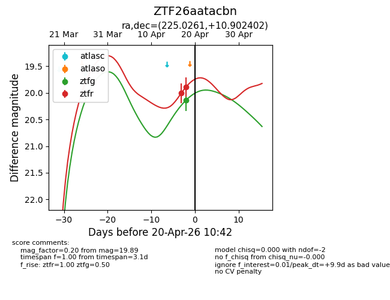
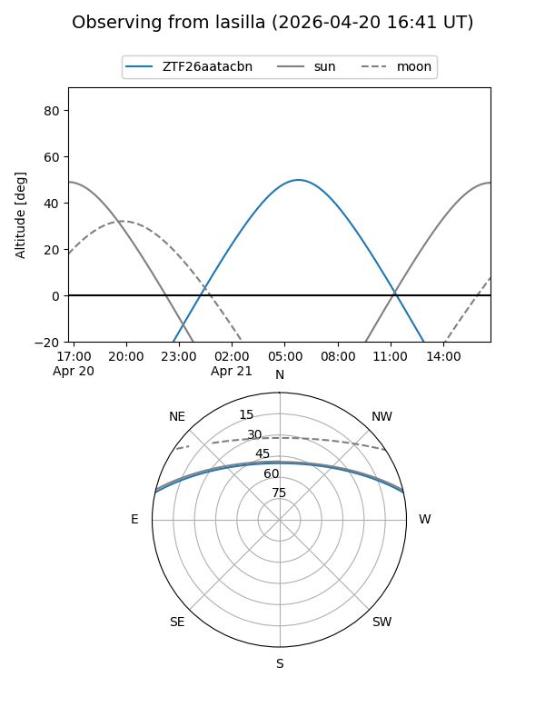
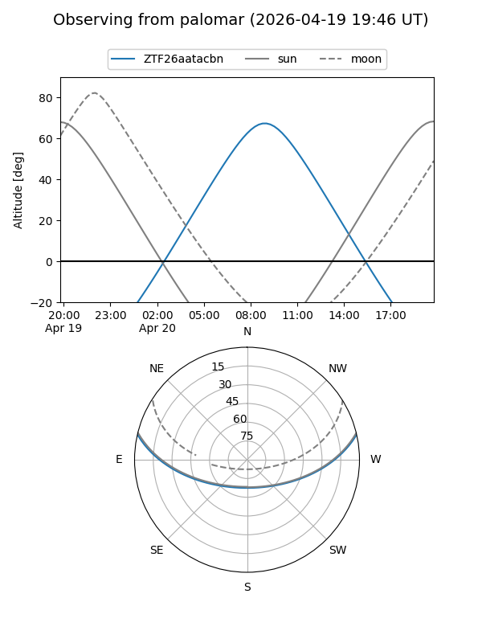
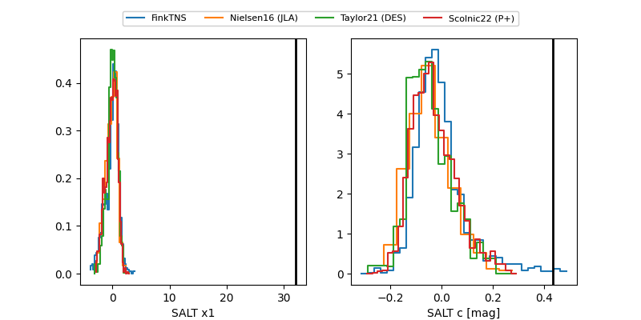

ZTF26aatacbn
Target ZTF26aatacbn at 2026-04-20 10:53
Aliases and brokers:
FINK: link
Lasair: link
ALeRCE: link
alt names
ZTF26aatacbn (ztf,fink_ztf)
Coordinates:
equatorial (ra, dec) = 225.0261,+10.90240
equatorial (HMS+DMS) = 15:00:06.26,+10:54:08.65
galactic (l, b) = (10.9808,+55.69239)
Flags:
Photometry:
last ztfg=20.14, ztfr=19.89
1 ztfg, 2 ztfr detections
Lightcurve

Visibility


Additional plots
